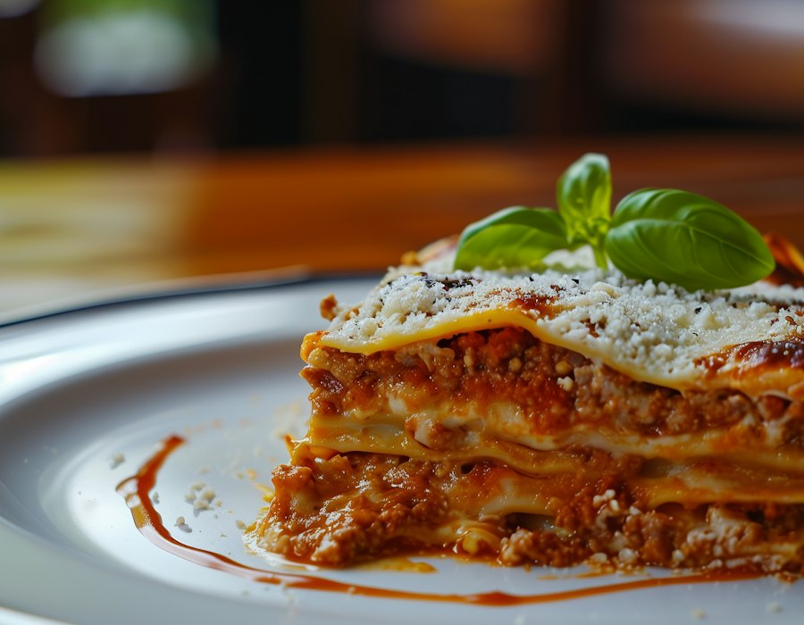
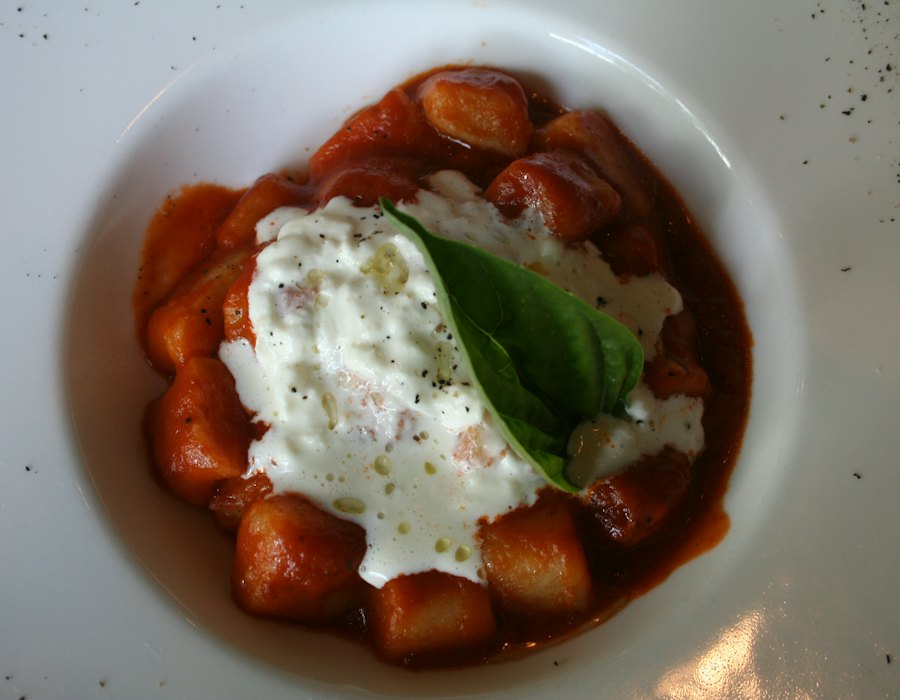
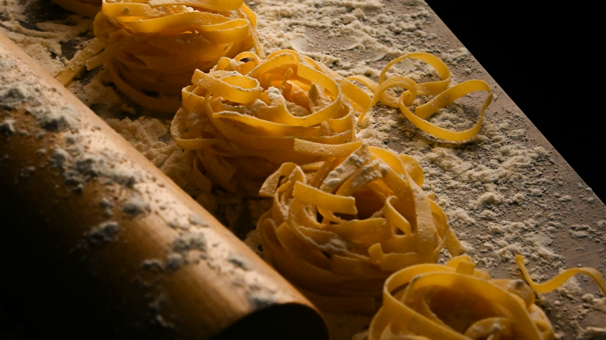

Saem da cozinha
Alguns dos pratos mais lembrados por quem é cliente. O cardápio completo, com preços, entra no site final.
Lasanha
Camadas de massa, molho e queijo gratinado na travessa. A mais pedida para o almoço de domingo.
Nhoque quatro queijos
Nhoque macio coberto com molho cremoso de quatro queijos.
Filé à parmegiana
Filé empanado com molho de tomate e queijo derretido.
Filé à Malvinas
Um clássico da casa que os clientes não esquecem.
E se não estiver no cardápio?
Pergunte. A cozinha também prepara pedidos sob encomenda.


Fotos ilustrativas. No site final entram as fotos dos pratos da Cantina.

Domingo é dia de massa.
A Cantina abre no domingo das 9h às 14h. Encomende antes e passe só para retirar.
Encomendar para domingoComo pedir
A Cantina não faz entrega. Você encomenda e retira no balcão, quentinho.
- Escolha os pratosLasanha, nhoque, parmegiana ou o que der vontade.
- EncomendePelo WhatsApp ou pelo telefone (19) 3441-4308.
- Retire na Vila AnitaNa Rua Doutor Trajano de Barros Camargo, 1650.
Mais de 50 anos de cozinha italiana
A Cantina do Angelo é negócio de família. Desde 1971 serve massas, carnes e saladas à moda italiana, no à la carte e na rotisseria.
Quem é cliente costuma falar da cozinha caprichada, do lugar limpinho, do preço justo e do atendimento educado.
4,8no Google, com mais de 200 avaliações
Horários
| Domingo | 9h às 14h |
|---|---|
| Segunda | Fechado |
| Terça | 9h às 14h |
| Quarta | 9h às 14h |
| Quinta | 9h às 14h |
| Sexta | 9h às 14h e 18h às 20h |
| Sábado | 9h às 14h e 18h às 20h |
Rua Doutor Trajano de Barros Camargo, 1650
Vila Anita – CEP 13480-756
Perguntas frequentes
Vocês fazem entrega?
Não. A Cantina trabalha com retirada no balcão. Encomende pelo WhatsApp ou telefone e passe para buscar.
Dá para pedir algo que não está no cardápio?
Dá. Pergunte pelo WhatsApp que a cozinha diz se consegue preparar.
Abre à noite?
Na sexta e no sábado, também das 18h às 20h. Nos outros dias, só no almoço.
Abre na segunda?
Não. Segunda é a folga da Cantina.